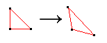
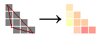

To render the warped photo above, a mesh of 400 triangle coordinates, a photo, a vertex & fragment shader program and uniform points are uploaded to the GPU using WebGL.
When you click and drag on the photo, new uniform points are set on the GPU...
Vertex shader

...The GPU runs the vertex shader below to distort the mesh using the uniform points...
Fragment shader

...and the fragment shader paints photo pixels using the distorted mesh.